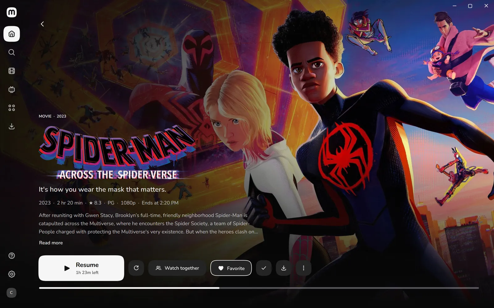
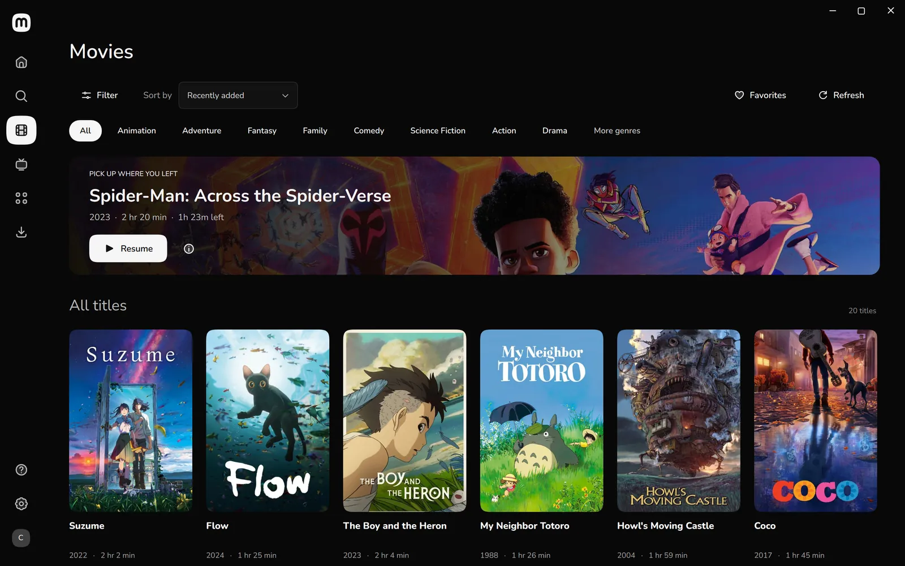
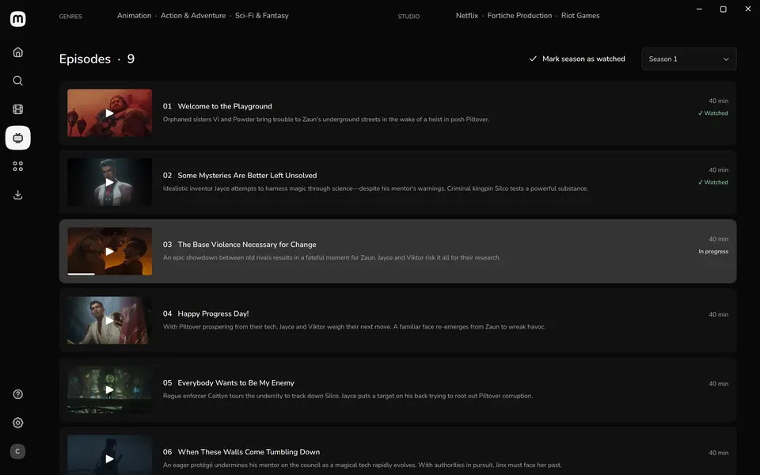
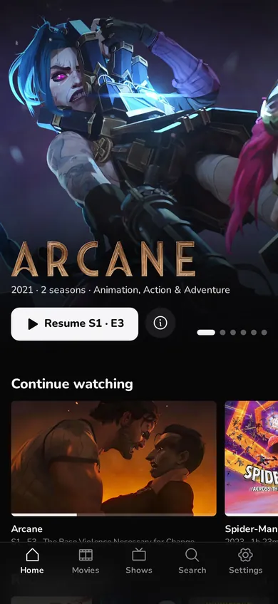

iPhone and iPad · trial
Mira for iPhone
The native app, with its own player, Picture in Picture and AirPlay. Installed with AltStore and a free Apple ID.
Mira __VERSION__
A free Jellyfin client for Windows, Mac, iPhone and Android. It plays everything, sets up your server, and nothing leaves your home.

The mpv engine, inside Mira: almost any file, as it is.
To the minute, on the PC, the Mac or the phone.
One link to watch the same film, each at home.
No Mira account, no analytics, no ads.
Library
Posters, large artwork, cast and collections: your library looks like a streaming service, with nothing to set up.

And the ones missing from a season, dated.
Sagas found on their own, and the ones you make by hand.
One that Jellyfin got wrong, in two clicks.

Player
Playback happens in Mira, not in a browser: the file as it is, its audio tracks, its subtitles at your size.

Checked against the film and synced to the voices, by your server.
Intros skipped in one gesture, the next episode on its own.
Dolby and DTS sent untouched, from Mira for Windows.

Phone
Built-in Tailscale reaches your server from anywhere, with no VPN app to install.
iPhone and iPad · trial
The native app, with its own player, Picture in Picture and AirPlay. Installed with AltStore and a free Apple ID.
iPhone, iPad, Android
Served by your own Jellyfin, nothing to download: scan the QR code from Mira for Windows and add it to your Home Screen.
Together
Send your party link. Your friends join from their phone or their computer, even from their own Jellyfin. A pause on one side pauses everyone.

Join the Mira party
Camille is watching Arcane · S1 E3
Setup
On the PC that keeps your films, Mira for Windows installs Jellyfin and prepares everything in one click, with a single Windows prompt.
Firewall open to your home only, PC kept awake, graphics card, backups and updates.
A QR code opens Mira web at the right address, at home or away.
Sign in once: Mira finds your server from anywhere, on every device.
Privacy
Your library, what you watch and when: it stays between your devices and your Jellyfin.
You sign in to your Jellyfin, and no one else. No analytics, no ads.
The update check, Tailscale, subtitle search: each one says what it sends before it starts.
No cookies, no trackers, nothing loaded from elsewhere. Hosted by GitHub Pages.
Download · Mira __VERSION__
Free and open source. You need a Jellyfin 10.9 server or newer, or let Mira for Windows install it.
Windows 10 or 11, x64Your device
The installer, then Mira keeps itself up to date.
InstallerApple silicon, macOS 15 or laterYour device
Drag Mira to Applications, then allow it once: it isn’t signed by Apple. Or with Homebrew: brew install --cask sasou-web/mira/mira
Nothing to downloadYour device
Mira web comes from your server: in Mira for Windows, Guide, then Mira on your phone. On iPhone, the native app is in trial.
Mira web guideThe Windows files aren’t signed yet: SmartScreen may ask for confirmation (More info, then Run anyway). Each version publishes its SHA-256 checksums in an immutable release on GitHub.